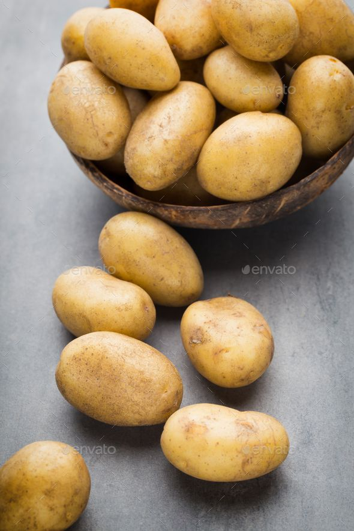

Potato Cultivation Guide

1. Land Preparation
Plow land 2–3 times and make ridges and furrows.
Add FYM (15–20 tons/acre) before final plowing for better fertility.
Soil should be loose, well-drained, and loamy with a pH of 5.5–6.5.
2. Seed Selection & Planting
Use certified disease-free tubers of recommended varieties.
Cut large tubers into pieces (each with at least one eye) and treat with fungicide.
Spacing: 20–25 cm between plants and 60 cm between rows.
3. Water Management
Provide light irrigation after planting to settle the soil.
Subsequent irrigation every 7–10 days depending on soil moisture.
Stop irrigation 10 days before harvesting.
4. Fertilization Schedule
Basal: FYM + Urea (30–40 kg), DAP (30–35 kg), MOP (20–25 kg) per acre.
Top dressing: Urea and Potash at 30–35 days after planting.
5. Weed & Pest Management
First weeding 20 days after planting; use pre-emergent herbicide if needed.
Pests: Aphids, Cutworms — manage using neem oil or insecticides.
Diseases: Late Blight — control using fungicides like Mancozeb.
6. Investment Breakdown (Per Acre)
Input
Estimated Cost (INR)
Seed Tubers
₹6,000 – ₹9,000
Fertilizers & FYM
₹3,000 – ₹4,000
Pesticides/Fungicides
₹2,000 – ₹3,000
Labor & Machinery
₹5,000 – ₹8,000
Irrigation
₹2,000 – ₹3,000
Total Investment
₹18,000 – ₹27,000 per acre
7. Harvesting & Yield
Harvest 90–120 days after planting when tops start drying.
Expected yield: 80–120 quintals per acre.
8. Market Rate & Profit Estimation
Average price: ₹1,000 – ₹2,500 per quintal.
Gross returns: ₹80,000 – ₹3,00,000 per acre.
Net profit: ₹50,000 – ₹2,70,000 per acre.